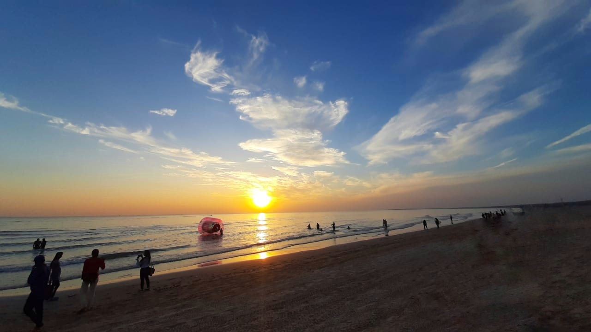

PROJECT
My name is Kavya Suthar.

This is
Mandvi beach
of Kutch.
It is in south of Bhuj.
The calm beach is refreshing addition for travellers to the town.
Evenings are particularly great with the sunset, snack stalls and balloon sellers.